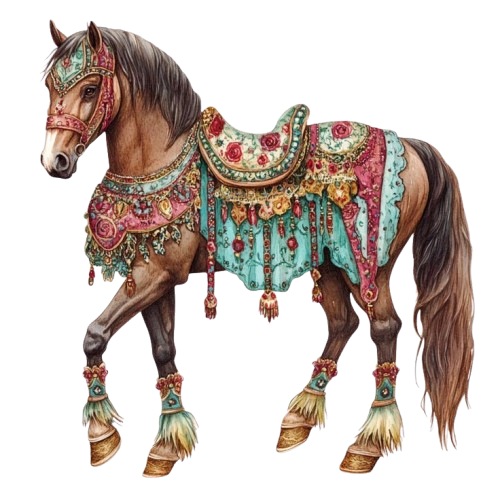
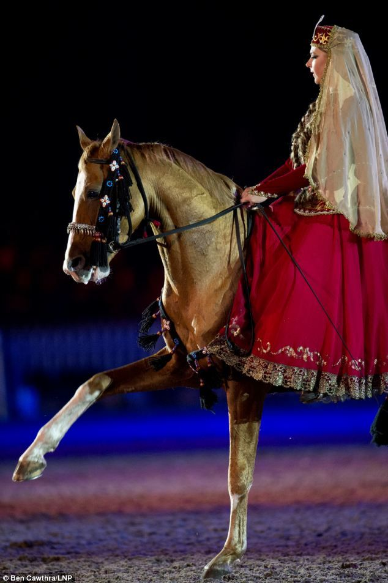
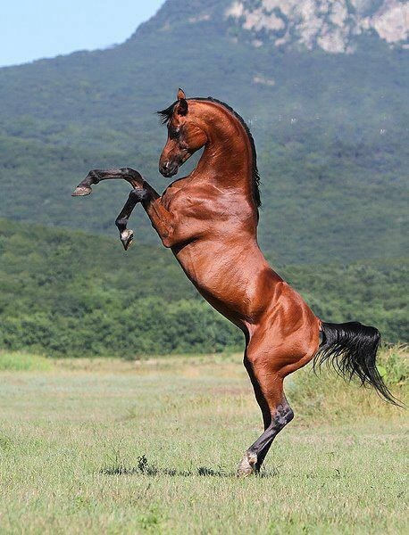
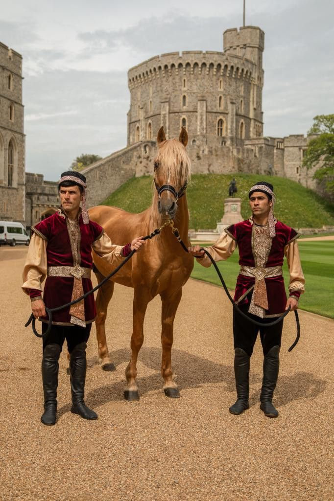

The Karabakh horse is a small, elegant breed native to the Karabakh region of Azerbaijan. Known for its golden chestnut color, strong legs, and lively personality, it is highly valued for endurance and speed. Karabakh horses are intelligent, gentle, and loyal, making them perfect companions for riding and cultural events. They are considered a national symbol of Azerbaijan and are famous for their beauty.

Popular Karabakh Horses

Known for its golden chestnut color and gentle temperament. Highly prized for endurance.

Elegant and intelligent, Sumakh is valued for agility and cultural performances.

Famous for its beauty and speed, Zaman represents the national symbol of Azerbaijan.
A short video showcasing their beauty and elegance.